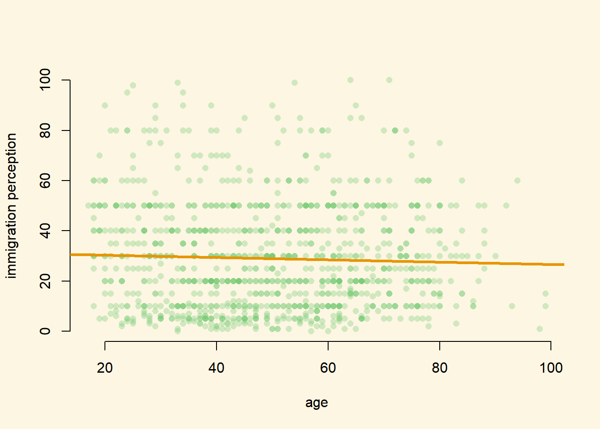

6.2 Solutions
6.2.0.1 Exercise 3
Load the non-western foreigners dataset from week 2.
load("BSAS_manip.RData")6.2.0.2 Exercise 4
Estimate a model that explains subjective number of immigrants per 100 British citizens using only one independent variable. Justify your choice. (You do not have to pick the best variable but try to make a reasonable argument why more of x should lead to more/less of y).
m1 <- lm(IMMBRIT ~ RAge, data = data2)We use age as predictor variable. We argue that older people are less positive towards immigration and tend to overestimate the number of immigrants to overemphasize the problem. We, therefore, expect a positive relationship between age and the perception of immigration.
6.2.0.3 Exercise 5
Plot a scatterplot of the relationship and add the regression line to the plot.
plot(
y = data2$IMMBRIT,
x = data2$RAge,
xlab = "age",
ylab = "immigration perception",
frame.plot = FALSE,
pch = 16,
col = rgb(red = 110, green = 200, blue = 110, alpha = 80, maxColorValue = 255)
)
abline(m1, lwd = 3,
col = rgb(red = 230, green = 150, blue = 0, alpha = 255, maxColorValue = 255))
The regression line slopes downward, ever so slightly, pointing towards a tiny negative relationship. The residuals seem to be extraordinarily large. It seems, that the relation between age and immigration perception is weak at best. This is more consistent with no relationship.
6.2.0.4 Exercise 6
Interpret the regression output and try to imagine that you are communicating your results to someone who does not know anything about statistics.
library(texreg)
screenreg(m1)
========================
Model 1
------------------------
(Intercept) 31.38 ***
(1.95)
RAge -0.05
(0.04)
------------------------
R^2 0.00
Adj. R^2 0.00
Num. obs. 1049
RMSE 21.06
========================
*** p < 0.001, ** p < 0.01, * p < 0.05We cannot, with sufficient confidence, rule out that age and immigration perception are unrelated (\(p > 0.05\)).
As we will learn next week, \(R^2\) indicates, that our model does a terrible job at predicting the perception of immigration. We could predict the outcome (perception of immigration) equally well without our model.
Suppose, our best guess of IMMBRIT for any age is just the mean of IMMBRIT. The quality of that prediction (in statistics jargon, the naive guess) would be as good as the predictions we get from our model.
6.2.0.5 Exercise 7
Estimate another model (i.e. choose a different independent variable) on the same dependent variable. Justify the choice.
m2 <- lm(IMMBRIT ~ HHInc, data = data2)We choose income as the predictor in our second model. We conjecture that on average, wealthier people are more educated and hence have a more realistic view of immigration. Furthermore, they tend to face less competition from immigration and, therefore, tend not to exaggerate the level of immigration. We expect that the wealthier the respondent, the lower the respondent’s estimate of immigration.
6.2.0.6 Exercise 8
Interpret the new regression output.
screenreg(m2)
========================
Model 1
------------------------
(Intercept) 43.12 ***
(1.41)
HHInc -1.47 ***
(0.13)
------------------------
R^2 0.10
Adj. R^2 0.10
Num. obs. 1049
RMSE 19.94
========================
*** p < 0.001, ** p < 0.01, * p < 0.05In line with our expectation, wealthier people perceive immigration to be lower than poorer people. The relationship is significant at the five percent level. We explain a tenth of the variance in the perception of immigration with our model (you will learn this next week). Considering that this model is very small (we use only one predictor variable), we do quite well at predicting the outcome.
6.2.0.7 Exercise 9
Compare the two models and explain which one you would choose.
screenreg( list(m1, m2))
=====================================
Model 1 Model 2
-------------------------------------
(Intercept) 31.38 *** 43.12 ***
(1.95) (1.41)
RAge -0.05
(0.04)
HHInc -1.47 ***
(0.13)
-------------------------------------
R^2 0.00 0.10
Adj. R^2 0.00 0.10
Num. obs. 1049 1049
RMSE 21.06 19.94
=====================================
*** p < 0.001, ** p < 0.01, * p < 0.05From what we have learned so far, we would look at the coefficients in our models. In the first, Age was insignificant. In the second, income is. Therefore, the second model is better at explaining perception on immigration. We learn nothing about potential causes of overestimating immigration from model one, whereas from model two, we do.
6.2.0.8 Exercise 10
htmlreg( list(m1, m2), file = "regressions_on_immigration_perception.doc")6.2.0.9 Exercise 11
Consider the following table. This analysis asks whether individuals who have spent longer in education have higher yearly earnings. The analysis is based on a sample of 300 individuals. The dependent variable in this analysis is the yearly income of the individual in UK pounds (earnings). The independent variable measures the number of years the individual spent in full-time education (education).
- Interpret the coefficient on the
educationvariable.
For each additional year of education we expect earnings to go up by 1270.81 pounds on average.
- Using the values given in the table, calculate the test-statistic
We compute the t value using the formula: \[ \frac{\bar{Y_{HA}}-\mu_{H_{0}}}{ \sigma_{\bar{Y_{HA}}} } \]
So, we take the alternative hypothesis (our estimate of the effect of education) minus the mean under the null hypothesis and divide the result by the standard error of our estimate. Unless stated otherwise, the null hypothesis is that there is no effect of education on income, i.e. the null is zero.
The coefficient estimate here is \(1270.81\) and its standard error is \(160.97\).
1270.81 / 160.97[1] 7.894701The t value is 7.89.
- Can we reject the null hypothesis of no effect at the 95% confidence level? (Just looking at the stars is not sufficient here! How can we work out the result of the hypothesis test?)
We have 300 observations in our sample and because we estimate two parameters, 298 degrees of freedom. A t distribution with 298 degrees of freedom is well approximated by the standard normal distribution. Under the normal distribution \(95\%\) are within \(1.96\) standard deviations from the mean. Our t value is more extreme than that. Our estimate is \(7.89\) standard deviations from the mean. It is unlikely to observe such an extreme value by chance (assuming the null hypothesis, there is no relation between education and income, is true). We therefore, reject the null hypothesis at 5 percent level.